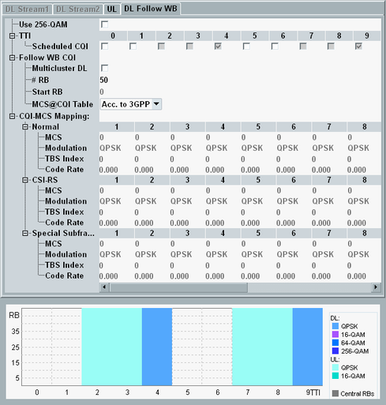

There are two variants of this tab. The CQI variant provides a mapping table and is active for the scheduling types "Follow WB CQI", "Follow WB CQI-RI" and "Follow WB CQI-PMI-RI".
Most settings are not configurable per TTI. They apply to all downlink subframes of the carrier. For carrier aggregation scenarios, you can configure the downlink settings per component carrier.
The expected maximum throughput that is displayed, for example, in the main view, is calculated using the maximum MCS index value of the mapping table.

There are two CQI and MCS definition tables in 3GPP TS 36.213, one table with 256-QAM and one table without 256-QAM. This setting selects which of the two tables is used.
256-QAM requires option R&S CMW-KS504/-KS554.
Remote command:According to 3GPP TS 36.521, some subframes must be inactive (not scheduled), depending on the duplex mode and the scheduling type, see "CQI Channels". The default behavior complies with the 3GPP definition.
The checked boxes indicate which subframes are scheduled. The configurable checkboxes allow you to activate additional DL subframes and special subframes.
Remote command:Plus corresponding PCC commands.
Only displayed for LAA. Defines the number of subframes per burst.
Remote command:Only displayed for LAA. Defines the periodicity n for subsequent bursts (a burst starts every nth subframe). The minimum value equals the burst length.
Example: Burst length = 3, Periodicity = 4 results in the sequence: (3 SF burst) (1 SF muting) (3 SF burst) and so on.
Remote command:You can enable DL multi-cluster allocation only for resource allocation type 0 (resource block groups). Option R&S CMW-KS510/-KS512 is required (without CA/with CA).
To use DL multi-cluster allocation, enable the checkbox. The button "RB Clusters" is displayed. Press the button to open the following configuration window.

In this dialog box, you can enable or disable each individual RBG via the checkboxes.
Remote command:Plus corresponding PCC commands.
Select the number of allocated resource blocks and the number of the first allocated resource block (without DL multi-cluster allocation).
Remote command:Plus corresponding PCC commands.
The mapping table assigns an MCS index value (0 to 28, with 256-QAM 0 to 27) to each possible reported wideband CQI index value (1 to 15). The MCS index value used for the downlink is dynamically determined according to this table, using the previous wideband CQI value reported by the UE.
The MCS index determines the modulation type and TBS index as defined in 3GPP TS 36.213, table 7.1.7.1-1 (without 256-QAM) and table 7.1.7.1-1A (with 256-QAM). Which of the two tables is used, is selected via the parameter "Use 256-QAM".
For TM 9, there are separate mapping tables for downlink subframes without CSI-RS ("Normal") and with CSI-RS.
For TDD, there is a separate mapping table for special subframes.
- Acc. to 3GPP: The mapping is defined automatically based on 3GPP specifications. The used CQI to MCS mapping is displayed for information.
- User-Defined: You can configure the CQI to MCS mapping manually.
In both cases, the resulting modulation types, TBS indices and code rates are displayed for information.
The displayed code rate applies to default DL subframes. If you enable additional subframes via "Scheduled CQI", their code rate is slightly less than the displayed code rate.
The following commands apply to the scheduling type "Follow WB CQI".
Remote command:Plus corresponding PCC commands.
The following commands apply to the scheduling type "Follow WB CQI-RI".
Remote command:Plus corresponding PCC commands.
The following commands apply to the scheduling type "Follow WB CQI-PMI-RI".
Remote command:Plus corresponding PCC commands.